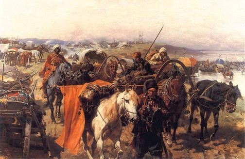

Українські козаки
козацькі війська, які початково були організовані задля оборони Київсько руських земель, що увійшли до складу Великого Князівства Литовського, Руського й Жемайтійського, від степових орд у часи тотального наступу Східного Світу і Великого Степу (в межах християнсько-мусульманського цивілізаційного протистояння) на терени сучасної України[1]. Згодом, брали активну участь у війнах з Московським царством на боці Речі Посполитої, а від XVII ст., під час Визвольної війни, і супроти останньої. Надалі, через суперечки щодо внутрішнього та зовнішнього політичного курсу, під час періоду, що отримав назву «Руїна», воювали, у тому числі супроти один одного, переважно у союзі з різними сусідніми імперіями[2], до складу яких зрештою були інкорпоровані.
Герб Війська Запорозького з літопису Григорія Грабянки, що присвятив йому пісню (староукр.) "Войська Запорозького воїн знаменитий" Перші згадки про українських козаків зустрічаються в історичних джерелах 80–90-их років XV ст., йшлося про населення центральної України, яке ходило на різні промисли («в уходи») — полювання, рибальство, видобуток солі, селітри або займалося охоронною службою на кордоні між князівством Литовським і Кримським ханством.
Етнічно складалися переважно зі слов'ян[3][4]. У похованнях Нижнього Подніпров'я післямонгольського періоду виявлено також ознаки сармато-салтівської групи, що пов'язана із давніми болгарами, народів Кавказу та монголоїдні ознаки, проте частка останніх є незначною[5]. Українське козацтво виникло фактично на фронтирі слов'янського та кочівничого світів.В Україні
 На загал, козаки були місцевим населенням, організованим для захисту південних кордонів від нападів військ Османської імперії та її васалів князями, які на той час володіли землями по Дніпро. С. Плохій на початковому етапі формування відзначав значний відсоток білорусів[3]. Ряд істориків визначали за пращурів козацтва бродників, берладників, та болохівців[11]. Першими козацькими гетьманами літописці та пізніші історики називають черкаського та канівського старосту — Остафія Дашкевича і хмільницького старосту — Прецлава Лянцкоронського. Також згадується Юрій Пац[12].
В польських письмових джерелах саме слово «козак» стосовно українських козаків з'явилося в 1516 рр. опісля спільного військового походу Дашкевича та Лянцкоронського супроти білгородської орди: вслід за нападом ногайців в 1515 р. на українські землі вони спустошують їх кочовища до самого Білгорода. Король Сигізмунд дипломатично вибачився за їхні дії перед ханом і сказав, що це було не військо, а козаки, вживши для цього слово кримськотатарського походження, яке перед тим вживав сам хан, виправдовуючи пограбування земель його підлеглими. З цього часу разом з назвою запорожці, а ще раніше черкаси, в польських письмових джерелах почали використовувати також назву козаки.
На той час існувало принаймні два основні типи руського козакування:
На загал, козаки були місцевим населенням, організованим для захисту південних кордонів від нападів військ Османської імперії та її васалів князями, які на той час володіли землями по Дніпро. С. Плохій на початковому етапі формування відзначав значний відсоток білорусів[3]. Ряд істориків визначали за пращурів козацтва бродників, берладників, та болохівців[11]. Першими козацькими гетьманами літописці та пізніші історики називають черкаського та канівського старосту — Остафія Дашкевича і хмільницького старосту — Прецлава Лянцкоронського. Також згадується Юрій Пац[12].
В польських письмових джерелах саме слово «козак» стосовно українських козаків з'явилося в 1516 рр. опісля спільного військового походу Дашкевича та Лянцкоронського супроти білгородської орди: вслід за нападом ногайців в 1515 р. на українські землі вони спустошують їх кочовища до самого Білгорода. Король Сигізмунд дипломатично вибачився за їхні дії перед ханом і сказав, що це було не військо, а козаки, вживши для цього слово кримськотатарського походження, яке перед тим вживав сам хан, виправдовуючи пограбування земель його підлеглими. З цього часу разом з назвою запорожці, а ще раніше черкаси, в польських письмових джерелах почали використовувати також назву козаки.
На той час існувало принаймні два основні типи руського козакування:
- Богоугодна експропріація незаконно зароблених іновірцями статків та майна — діяльність озброєних загонів козаків, які, часом під проводом місцевих урядників, часом проти їхньої волі, нападали на купців і посланців, що перетинали степ, на ногайські орди та османські фортеці у Північному Причорномор'ї. Таким чином козацтво стало вітчизною банітованих шляхтичів, професійних вояків і шукачів пригод не тільки з князівства Литовського, а й з Корони Польської, Московського царства та інших сусідніх держав.
- Промислове уходництво — промисел ватаг уходників що, як правило, вирушали вниз Дніпром аж до порогів та розташованих ще нижче плавнів, де займалися рибальством, мисливством, бджільництвом тощо. На зиму вони, зазвичай, поверталися додому або до укріплених фортець середнього Подніпров'я. Оскільки місцеві старости з козацьких промислів стягали податки вони намагалися якомога рідше з ’являтися в старостинських замках, створюючи власні укріплення («городки», «січі») у місцях свого підприємництва. За умов небезпечного степового кордону, уходники мали бути добре озброєні й готові захищати себе від нападів степовиків, а інколи й самі чинили грабунки в степу.
- Двоспальні 160 та 180 см. шириною.
Також багато ліжок можуть бути виготовлені за індивідуальним розміром, наприклад 200 або 220 см шириною . Спеціально для Ваших діток у нашому інтернет-магазині Krovato.com є великий вибір дитячих ліжечок: двоярусні, ліжка машинки, підліткові та інші.
Спальню відмінно доповнить комплект тумбочок і комода. Ми співпрацюємо тільки з найкращими виробниками меблів, такими як Хмельницька Меблева Фабрика, Legko, MiroMark, АрборДрев, Естелла, Novelty. Наш магазин радує покупців постійними акціями. Наприклад, купивши ліжко з матрацом, Ви отримаєте безкоштовне складання ліжка, а також наматрацник у подарунок або знижку на матрац. Таким чином, ви отримуєте не тільки відмінну якість продукції, але і безліч бонусів, таких як безкоштовна доставка по Києву.
Причини появи козацтва як своєрідної військово-господарської організації прикордонної людності полягали у зовнішньополітичних обставинах, які склалися в степах північного Причорномор'я в останній чверті XV ст[11]. Наприкінці XV ст. Османська імперія зруйнувала Візантію та захопила генуезьку Каффу (зараз Феодосія) в Криму та Аккерман (зараз Білгород-Дністровський) в Буджаку. Завдяки чому посилюються кримськотатарські напади на руські (українські) землі. Кримське ханство ставши васалом Османської імперії почало здійснювати спустошливі напади передусім на Поділля та Волинь. Для оборони від кримськотатарських нападів на Правобережжі по Кучманському та Чорному шляхах виникає низка замків: Брацлав, Кам'янець, Бар, Сатанів, Меджибіж, Жванець, Зіньків, Вінниця. Основним завданням старост цих замків, була оборона території від кримського війська. Ці ж старости для оборони замків використовували також місцеве населення. А жителі таких міст як Черкаси, Канів організовували самостійно під керівництвом Отамана нагляд за бродами, через які кримські татари переходили на українські землі, як-то: Кременчук, Гербедеїв Ріг, Тавань, Очаків та інші.
Як правильно обрати ліжко?
При виборі ліжка в інтернет магазині Вам в першу чергу потрібно вибрати матеріал. Найбільшою популярністю користуються дерев'яні ліжка, виготовлені з вільхи, ясена чи дуба. Такі моделі чудово прикрасять Вашу спальню у квартирі чи приватному будинку. Для орендованих квартир, під здачу, більше підійде ліжко з металу, так як воно просто «не вбивається», а також має дуже демократичну ціну.
Для Вашої зручності ліжко може комплектуватись висувними ящиками або підйомним механізмом. Ящики можуть бути з одного боку ліжка або з двох. Також є моделі, з висувними ящиками спереду. Ліжка з підйомним механізмом, це відмінне рішення, для невеликих кімнат, вони дозволяють заощадити простір і мають велику нішу для зберігання постільної білизни. Всі дерев'яні ліжка комплектуються буковими ламелями. Спальне місце з ламельною основою може витримувати навантаження до 150 кг на одне спальне місце. Відстань між ламелями, у своїй має бути 2,5-3 див.
Кожне ліжко може бути забарвлене у різні кольори: чорні, білі, сірі, венге, у кольорі горіх. Завдяки цьому ліжко можна підібрати під будь-який інтер'єр. Важливим складником правильного вибору ліжка є вибір розміру. Ліжка поділяються на:
- Односпальні 80 та 90 см шириною.
- Полуторні 120 та 140 см. шириною.
- Двоспальні 160 та 180 см. шириною.
Також багато ліжок можуть бути виготовлені за індивідуальним розміром, наприклад 200 або 220 см шириною . Спеціально для Ваших діток у нашому інтернет-магазині Krovato.com є великий вибір дитячих ліжечок: двоярусні, ліжка машинки, підліткові та інші.
Спальню відмінно доповнить комплект тумбочок і комода. Ми співпрацюємо тільки з найкращими виробниками меблів, такими як Хмельницька Меблева Фабрика, Legko, MiroMark, АрборДрев, Естелла, Novelty. Наш магазин радує покупців постійними акціями. Наприклад, купивши ліжко з матрацом, Ви отримаєте безкоштовне складання ліжка, а також наматрацник у подарунок або знижку на матрац. Таким чином, ви отримуєте не тільки відмінну якість продукції, але і безліч бонусів, таких як безкоштовна доставка по Києву.